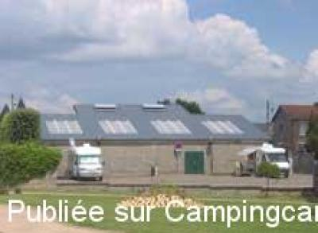
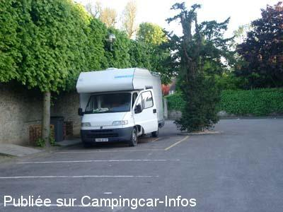

ASN = Aire de services avec stationnement nuit possible de :
GOURNAY EN BRAY
(N° 381)
Accès/adresse :
Avenue Sadi Carnot
76220 GOURNAY EN BRAY
76220 GOURNAY EN BRAY
Latitude : (Nord) 49.48028° Décimaux ou 49° 28′ 49′′
Longitude : (Est) 1.72579° Décimaux ou 1° 43′ 32′′
Tarif : Gratuit
Services :


Commerces à proximité,
Autres informations :
Ouverte tous les jours de 10h à 12h et de 14h à 17h30,
Fermée dimanches et jours fériés.
Office du Tourisme de Gournay en Bray et son canton
9 Place d'Armes
Tél : +33 (0) 235 902 834
contact@ot-gournay-en-bray.fr
http://www.ot-gournay-en-bray.fr

Le 19/02/2010 par hema06

Le 07/04/2004 par Fradianne
de
PLXPIL
le 06/09/2015 :
Cette aire a le mérite d'exister pour faire étape et passer une nuit tranquille.
Le dimanche 16 août, des panneaux interdisaient le stationnement sans préciser l'étendue de la zone interdite mais nous n'avons pas été dérangés!
Cette aire a le mérite d'exister pour faire étape et passer une nuit tranquille.
Le dimanche 16 août, des panneaux interdisaient le stationnement sans préciser l'étendue de la zone interdite mais nous n'avons pas été dérangés!
de
Philhonfleur
le 29/07/2014 :
Nous y avons fait escale le 28 juillet 1914 à midi (un lundi). Pas un chat. Aire très propre et tous les services sont gratuits. Merci à la commune
Nous y avons fait escale le 28 juillet 1914 à midi (un lundi). Pas un chat. Aire très propre et tous les services sont gratuits. Merci à la commune
de
didiercompain
le 21/10/2013 :
prévu de faire escale avant de rentrer en région parisienne mais l'aire était monopolisée ce qui parait être récurrent si j'en crois les commentaires précédents.
prévu de faire escale avant de rentrer en région parisienne mais l'aire était monopolisée ce qui parait être récurrent si j'en crois les commentaires précédents.
de
jalicot
le 11/05/2010 :
Aire difficile à trouver car pas indiquée à l'entrée de la ville du coté Province Paris.
Aire difficile à trouver car pas indiquée à l'entrée de la ville du coté Province Paris.
de
pascal 85
le 01/02/2010 :
Bonjour à tous. Comme je l'ai déjà dit dans un précédent commentaire, le mardi est jour de marché local. Ne pas s'installer sur la place. Si vous avez envie de passer une bonne nuit allez à Sérifontaine, aire très calme. Je connais très bien la région pour y avoir habité. Cordialement
Bonjour à tous. Comme je l'ai déjà dit dans un précédent commentaire, le mardi est jour de marché local. Ne pas s'installer sur la place. Si vous avez envie de passer une bonne nuit allez à Sérifontaine, aire très calme. Je connais très bien la région pour y avoir habité. Cordialement
de
bopa76
le 24/08/2009 :
Aire calme et gratuite (même l'eau ), toilettes très propres sur le parking et en plus, en plein centre ville. Que demander de plus ? Evidemment, à eviter les jours de marché car à côté de la halle aux volailles. Merci à la commune.
Aire calme et gratuite (même l'eau ), toilettes très propres sur le parking et en plus, en plein centre ville. Que demander de plus ? Evidemment, à eviter les jours de marché car à côté de la halle aux volailles. Merci à la commune.
de
nenettemamita
le 22/08/2008 :
Impossible de jeter un oeil pour renseigner les copains sur cette aire, marché vendredi matin aussi.
Impossible de jeter un oeil pour renseigner les copains sur cette aire, marché vendredi matin aussi.
de
Laurent L.
le 04/04/2008 :
Bonjour. Cette aire de service est totalement bloquée le mardi matin car il y a le marché. Les locaux stationnent leurs véhicules sans faire attention aux camping-cars et à l'aire de services ! Cordialement
Bonjour. Cette aire de service est totalement bloquée le mardi matin car il y a le marché. Les locaux stationnent leurs véhicules sans faire attention aux camping-cars et à l'aire de services ! Cordialement
de
le 31/10/2006 :
Attention, le mardi jour de grand marché, peu de places disponibles!
Attention, le mardi jour de grand marché, peu de places disponibles!
de
Laurent
le 08/06/2006 :
L'aire est très bien entretenue. Le parking (en pente) est assez vaste pour accueillir une dizaine de camping-cars. Aire située en centre ville. Très pratique.
L'aire est très bien entretenue. Le parking (en pente) est assez vaste pour accueillir une dizaine de camping-cars. Aire située en centre ville. Très pratique.